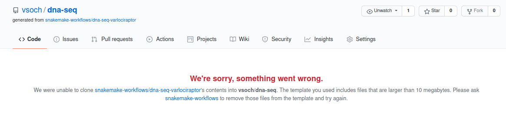

Template and Clone¶
Important If you find that the cloned repository is empty, this indicates that the request was not successful. GitHub has a limitation that the template repository cannot have files over 10MB, and it does not return an error code if this is the case. Instead, you’ll find that you cloned an empty repository, and see this error message in your requested repository name:
In this case it’s suggested to return to the first method and just clone the template.
To create a remote repository from the template, you will need to export a GitHub token for both the command line and Pythonic approaches below.
$ export GITHUB_TOKEN=xxxxxxxxxxxxxxxxxxxxxxxxxxxx
Command Line Usage¶
To template a repository and then clone your template, you can add the –remote flag:
$ snakedeploy https://github.com/snakemake-workflows/dna-seq-varlociraptor /tmp/dest --remote
If you don’t provide a --name, then the repository will be templated with your
user account and the same name as the repository being templated. For example, if my username
is “vsoch” and I clone the repository above:
$ snakemake-workflows/dna-seq-varlociraptor --> vsoch/dna-seq-varlociraptor
You can change this behavior by providing a name, which might make sense if you want a custom name for your project, or you already have a repository with the template’s name. For example, I’ve worked on the template as a developer, so I get an error when I try to create a default name. Here is how I’d ask for a custom name “vsoch/dna-seq”:
$ snakedeploy https://github.com/snakemake-workflows/dna-seq-varlociraptor /tmp/dest --remote --name vsoch/dna-seq
Python Usage¶
These same interactions can be done from within Python. It’s the same as before, but we template our repository first.
$ from snakedeploy.providers import ProviderRunner
$ provider = ProviderRunner()
$ repo = provider.template("https://github.com/snakemake-workflows/dna-seq-varlociraptor", name="vsoch/dna-seq")
$ dest = provider.deploy(repo, "/tmp/dest")